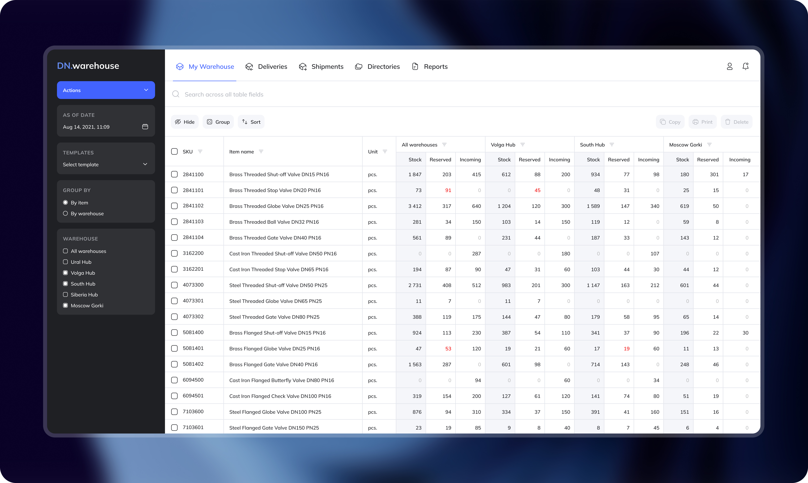
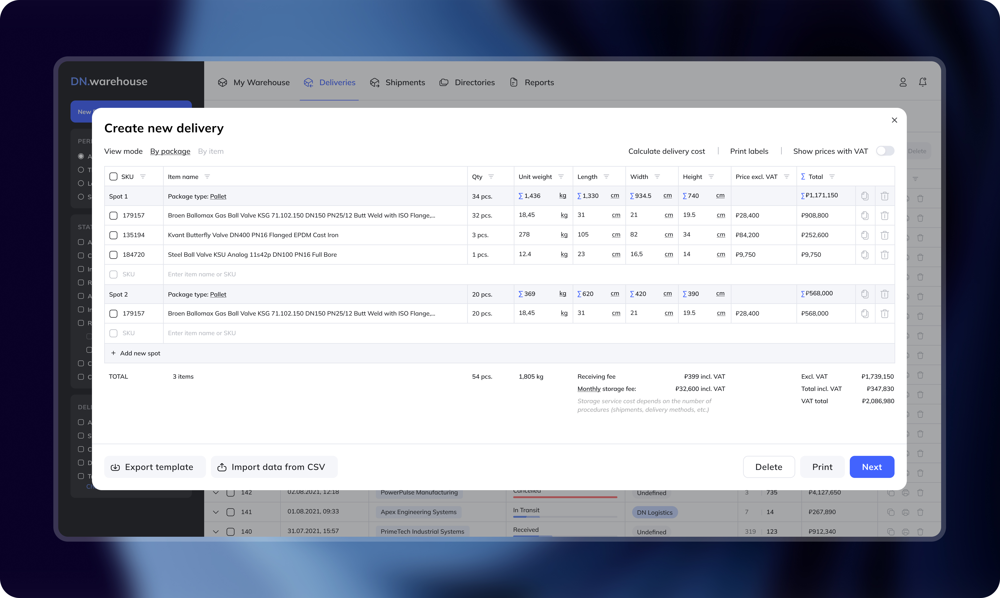
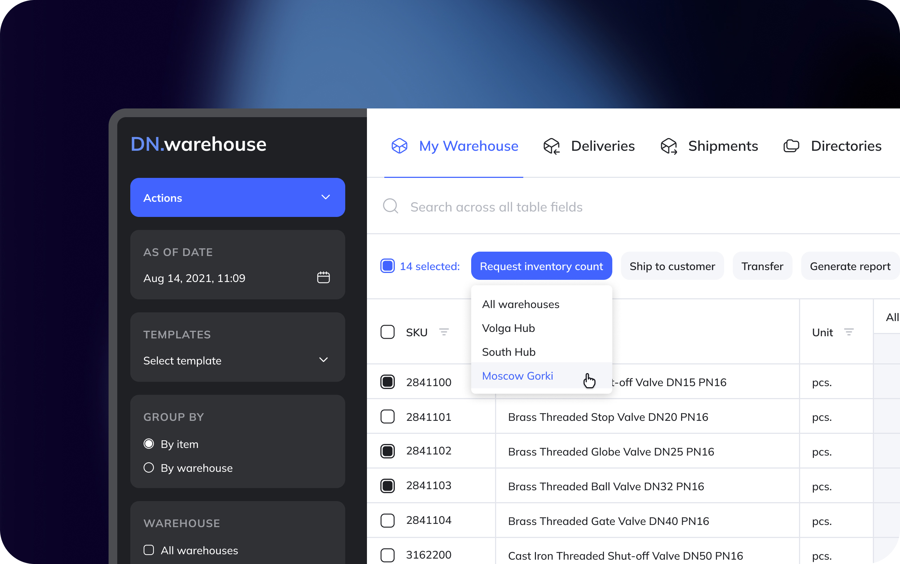

The old model: a dealer orders from DN, receives goods at their warehouse, then ships to their client. Two logistics steps where one would do.
The new idea: give dealers access to DN's warehouse infrastructure directly. DN fulfills orders straight to dealers' end clients — picking, packing, last-mile. Dealers save on storage. DN earns on logistics margin.
No off-the-shelf WMS supported the combination of complex industrial nomenclature, multi-location stock, and this new fulfillment model. We evaluated several — none fit. So we built from scratch.
How we replaced three daily tools with one table and cut stock lookup time from 4 minutes to 30 seconds.

Three months of operational logs pointed to the same two failure patterns every week. Here's what we changed.

Individual tasks were solved. Then we looked at what breaks when you scale to five warehouses and a full operations team.
